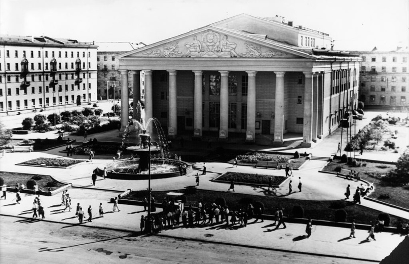
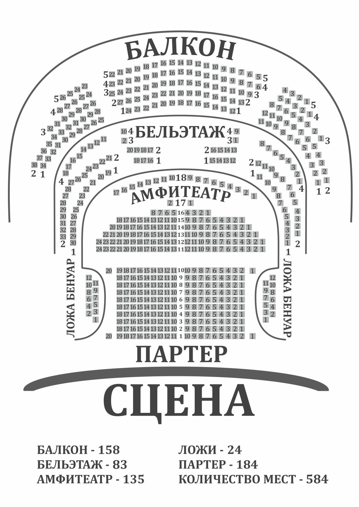
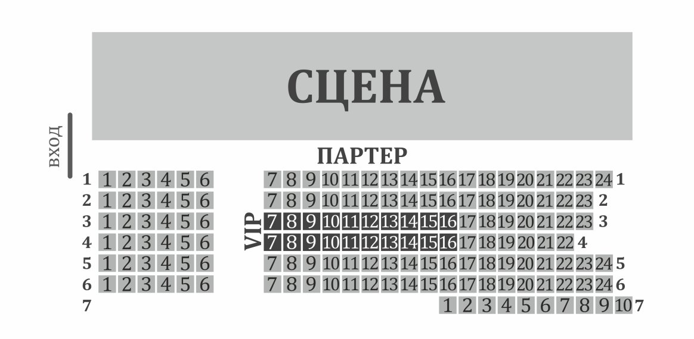
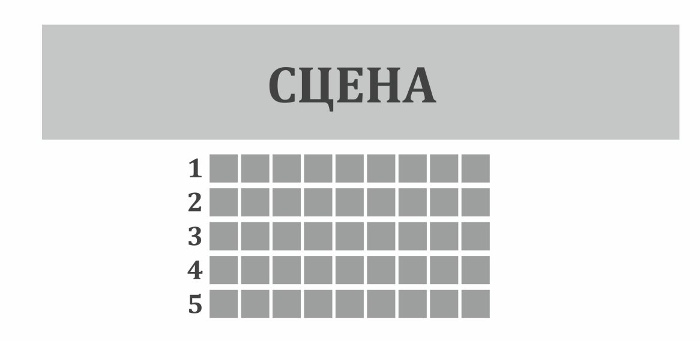
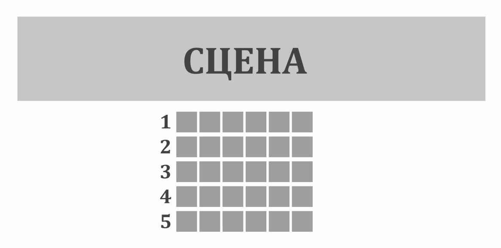

театр
драмы
кузбасса

История Кемеровского областного театра драмы началась 1 ноября 1934 года. Тогда ещё Государственный театр драмы «Культармеец Кузбасса» открыл первый театральный сезон спектаклем «Гибель эскадры» по пьесе Александра Корнейчука в постановке Алексея Ларионова. Алексей Евфимьевич Ларионов – первый руководитель театра, родился в 1894 году, «за заслуги по революционизированию театрального искусства» в 1922 году ему было присвоено звание заслуженного артиста РСФСР. Репертуар первого десятилетия работы кемеровского театра составляли спектакли по популярным в то время пьесам: «Как закалялась сталь» Николая Островского, «Чапаев» Дмитрия Фурманова, «Любовь Яровая» Константина Тренева и др.
За годы ВОВ театром было дано 56 выездных спектаклей, 794 концерта, 22 шефских спектакля.Труд коллектива театра в годы войны был отмечен медалями «За доблестный труд в Великой Отечественной войне 1941-1945 гг.», которые были вручены 52-м артистам, режиссёрам, работникам производственных цехов. 30 октября 1948 года театр вернулся в полностью восстановленное здание Дворца труда.
Сегодня Кемеровский областной театр драмы – один из главных театров региона, сохраняющий русские театральные традиции и в то же время активно осваивающий новые театральные направления. Главным режиссёром театра с 2015 года является Антон Безъязыков, выпускник СПбГАТИ (мастерская Григория Козлова). В репертуаре театра более 30 спектаклей для зрителей самого разного возраста. На сценических площадках Кемеровской драмы с успехом идут и классические пьесы, и современная драматургия. На базе театра проходят режиссёрские лаборатории, работает проект «Малая сцена», знакомящий зрителей с новыми театральными именами и современными форматами, успешно реализуются международные проекты («Кузбасс-Финляндия», «Кузбасс-Италия»). Одним из важных векторов работы является гастрольная деятельность – участие в обменных гастрольных проектах, сотрудничество с Федеральным центром поддержки гастрольной деятельности в рамках программы «Большие гастроли».
залы
большой зал
звездный зал
малый зал
фойе
как нас найти